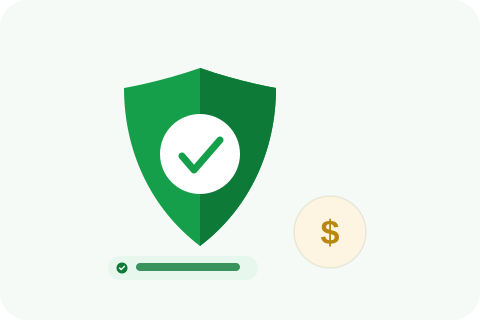

It's a reasonable question to ask before working with anyone: will I need to hand over my Google login? Here's how the process actually works, and why the answer is no.

Removing a review isn't done by logging into your Google Business Profile and deleting it, that capability doesn't even exist for business owners, Google reviews can't be deleted from the business side at all. Removal happens by filing a report through Google's official channels citing a specific policy violation, and Google's own team reviews and decides on it. None of that requires access to your account, your login credentials aren't part of the mechanism at any point.
To build a strong case, a service needs information about the review itself, which one, what it claims, why it's eligible, and sometimes supporting evidence from your own records, order history, booking confirmations, anything that shows a mismatch with the reviewer's claims. None of that requires your Google password. A legitimate provider is working with information you provide, not with direct access to your account.
If a provider does ask for your login credentials, be skeptical. There's no legitimate technical reason review removal requires it, since the actual removal mechanism runs entirely through Google's own reporting system. A request for account access is worth asking hard questions about, what exactly will they do with it, and why can't they accomplish the same thing without it.
Separately from removal, some services do offer ongoing profile management, posting updates, responding to reviews, keeping your listing current. That kind of work genuinely does involve some level of access, typically through Google's own delegated-access system for Business Profile managers, which lets you grant specific permissions without sharing your actual password, and which you can revoke at any time. This is a different service from removal, and it's worth knowing which one you're actually being asked to grant access for.
Ask directly: does this specific task require account access, and if so, is it through Google's own manager-invitation system, where you keep your password and full control, or an actual request for your login details. The former is normal for ongoing profile management. The latter has no legitimate justification for review removal specifically, and is worth declining.
If account access is being requested beyond what the actual task needs, it's worth asking the same question about other parts of the arrangement too, what data is being collected, how long it's kept, who else might see it. A provider that's precise about what access it actually needs for a specific task is usually precise about the rest of how it handles your information as well, and the reverse tends to hold too.
This isn't specific to Google. Trustpilot, Yelp, and Glassdoor all run their own flagging or reporting processes through the business's own dashboard access, not through handing over login credentials to a third party. The same logic applies across every platform covered on this blog: removal is a reporting process, not an account-access process, regardless of which platform the review is on.
Review removal runs entirely through the platform's own reporting process and doesn't require your login credentials at any point. If a provider is asking for your password specifically to remove a review, that's a sign to look elsewhere, not a normal part of how this work gets done.
We work entirely through official report channels, no account access required.